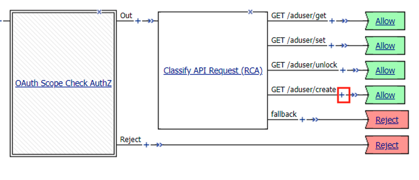
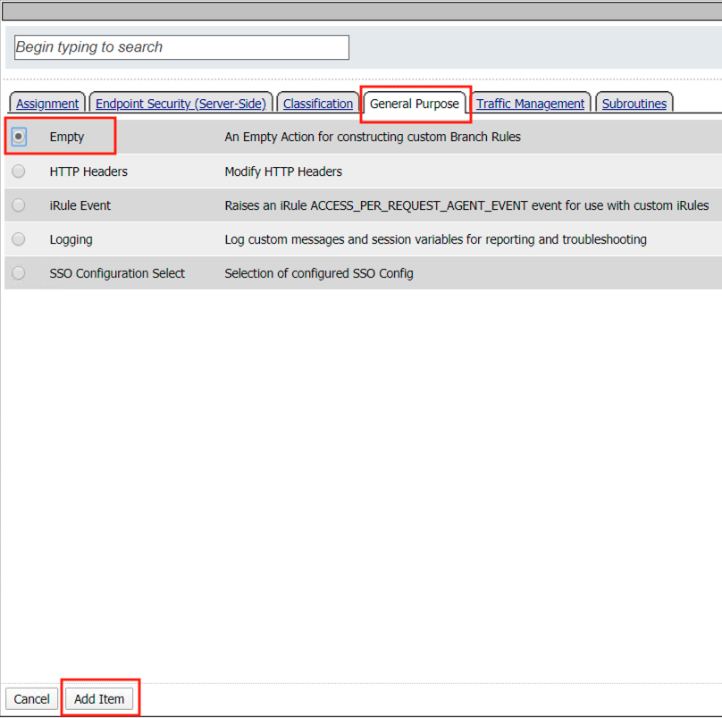
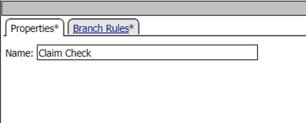
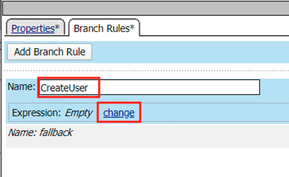
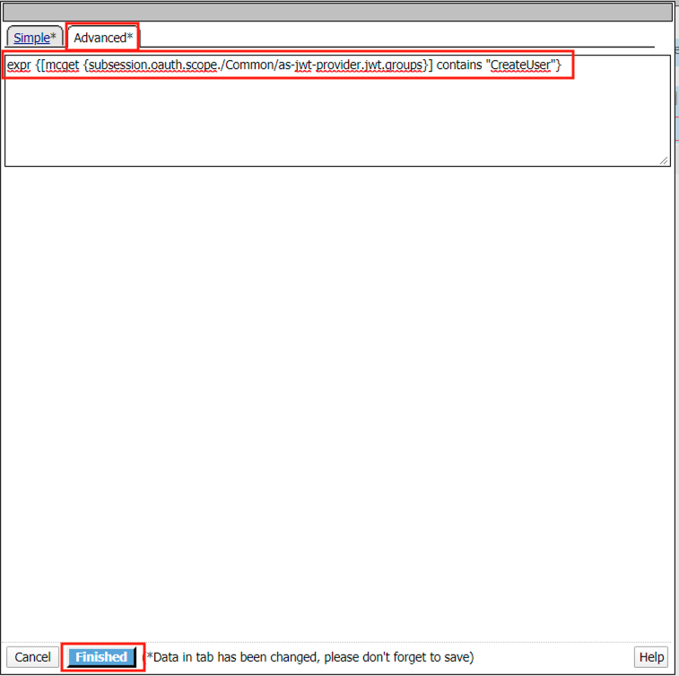
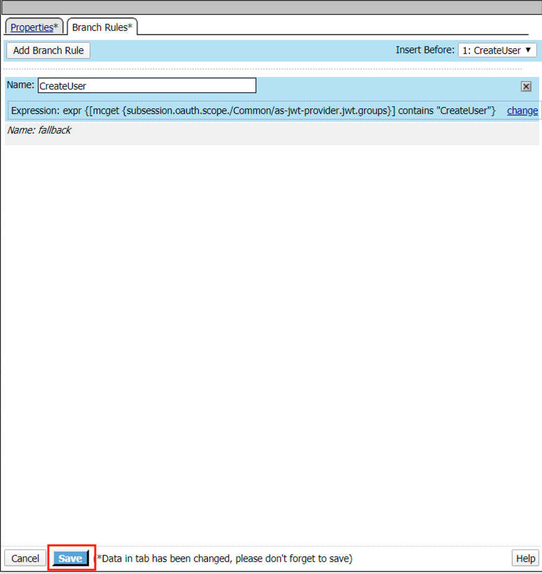
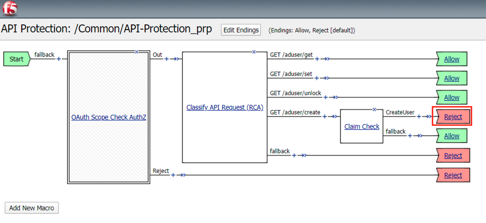
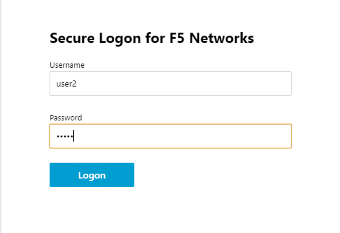

2.1.5. Lab – Implement Fine-Grain Access Controls¶
Up to this point any authenticated user to the API is authorized to use them. In this section we will strict user1’s ability to create users, but will still be able to modify the user’s employee number.
2.1.5.1. Task – Retrieve Group Membership Subsession Variable¶
- From the Jumpbox decktop click on the BIG-IP1 Putty Icon

Todo
NEED TO TALK TO LUCAS
2.1.5.2. Task – Edit the per-request policy¶
- From the Jumpbox, access the BIG-IP GUI https://10.1.1.4 (you can double-click on the BIG-IP1 bookmark from Chrome).
#. Login into the BIG-IP Configuration Utility with the following credentials: User: admin Password: admin
- Click on the Access tab located on the left side.

- Navigate to API Protection >> Profile. Click Profile to modify the previously created API protection Profile. Not the + Plus symbol.

- Click Edit Under Per-Request Policy

- Click the + (Plus Symbol) on the GET /aduser/create branch

- Click the General Purpose Tab
- Select Empty
- Click Add Item

- Enter the name Claim Check

- Click the Branch Rules Tab
- Click the Add Branch Rule

- Enter Name CreateUser
- Click Change

- Click the Advanced Tab
- Enter the string in the notes section to restrict access to only members of the CreateUser Group
- Click Finished
Note
expr {[mcget {subsession.oauth.scope./Common/as-jwt-provider.jwt.groups}] contains “CreateUser”}

- Click Save

- Click Reject on the CreateUser Branch to permit access

- Select Allow
- Click Save

- Click Allow on the fallback branch to deny unprivileged requests

- Select Deny
- Click Save

- Review the Policy Flow.

2.1.5.3. Task – Test the Fine-Grain Access Control with user1¶
- From the Jumpbox, open Postman

- Expand the API Protection Collection
- Select the request GET-Create User-JWT-Pass

- Select the Authorization Tab
- Click Get New Access Token

- Review the Postman Configuration. Nothing should need to be modified
- Click Request Token

- Login using Username: user1, Password: user1

- Scroll down the token and click Use Token

- The Token field is now populated

- Click Send
- You receive a 403 Forbidden when using user1. User1 does not contain the proper claim data.

2.1.5.4. Task – Test the Fine-Grain Access Control with user2¶
- Select the request GET-Create User-JWT-Pass
- Select the Authorization Tab
- Click Get New Access Token
- Review the Postman Configuration. Nothing should need to be modified
- Click Request Token
- Login using Username: user2, Password: user2

- Scroll down the token and click Use Token
- The Token field is now populated
- Click Send
- You receive a 200 OK when using user2. User2 does contain the proper claim data.